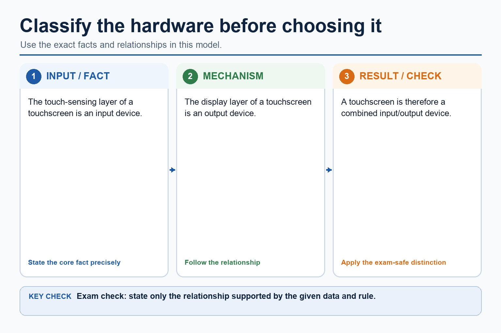

S3.01, S3.02 | Learn from the diagrams, test the method, then choose the practice you need.
Choose a Quick, Full or Deep route
Quick route
Use the diagnostic, learning objectives, first worked example and foundation question. Stop once the learner can explain the central distinction accurately.
Full route
Use every knowledge-point material set, the worked method, the terminology check and all questions.
Deep route
Add the prerequisite refresher, ask learners to connect the concept checklist, discuss the labelled extension and complete a transfer question without a model answer.
Part 1 | optional depth
Prerequisite knowledge and quick diagnostic
Recall the main conclusion from Lesson 012: IP addressing, subnetting, URLs and DNS.
Give one accurate definition or method step before continuing. If it is missing, revisit only that prerequisite.
Part 2 | knowledge-point material sets
Learn each point through visuals
Follow the map, the three-part explanation and the concrete cue. Open precise wording only after the idea is clear.
Open the concept checklist and choose what to teach
MeaningShow understanding of the need for input, output, primary memory and secondary storage, including removable storage
MechanismA surveyor enters measurements through a touchscreen, sees validation messages on the display, uses RAM as primary memory while the survey application runs, saves records on…
ConsequenceRemovable storage is secondary storage that can be disconnected, so it can transfer data or hold an offline backup, although it can be lost or stolen
S3.01 diagrams
1 / 4
01
Process · 1 of 4
The basic system flow
Open text transcript
Input devices capture data for processing.
The processor works with instructions and data held in primary memory.
Processed results can go directly to output devices.
Secondary storage is a separate bidirectional persistence path and is not a compulsory stage before output.
02
Diagram · 2 of 4
Memory is not the same as storage
Open text transcript
Primary memory
Secondary storage
Holds data/instructions currently being used.
Holds files and data long term.
Volatility
RAM is volatile; contents are lost without power.
Non-volatile; data remains when power is off.
Speed and capacity
03
Concrete example · 3 of 4
What secondary storage does
Open text transcript
Non-volatile Data remains when power is switched off.
Long-term Stores files, programs, backups and operating system data.
Usually slower Secondary storage is usually slower than RAM for direct access.
Scenario-based The best medium depends on speed, capacity, durability, portability and cost.
04
Comparison · 4 of 4
Classify the hardware before choosing it

Open text transcript
The touch-sensing layer of a touchscreen is an input device.
The display layer of a touchscreen is an output device.
A touchscreen is therefore a combined input/output device.
Open precise syllabus wording
Explain the need for input, output, primary storage, secondary storage and removable storage.
Show understanding of the need for input, output, primary memory and secondary storage, including removable storage.
02
S3.02 · comparison
Embedded system · Dedicated · Benefit · Drawback
Concept map
embedded systemdedicatedbenefitdrawback
See how it works
ContrastShow understanding of embedded systems, including their benefits and drawbacks
EvidenceDrawbacks can include limited processing, storage and user interface, difficulty adding new functions, and dependence on the embedded controller
DecisionAn embedded system is a computer system built into a larger device to perform one dedicated task or a closely related set of tasks
S3.02 diagrams
01
Analogy / use · 1 of 1
What is an embedded system?
Open text transcript
An embedded system is designed to perform a specific task or closely related set of tasks.
It forms part of a larger product, such as a washing machine, microwave oven or router.
It often uses a limited interface and task-specific resources.
Low cost, low power and reliable repeated operation may be relevant design priorities.
Define an embedded system by purpose and context, not only by physical size.
Open precise syllabus wording
Understand embedded systems and their benefits/drawbacks.
Show understanding of embedded systems, including their benefits and drawbacks.
Do not just say "fast"; explain heat tolerance or cooling.
Moisture / water
09
Diagram · 9 of 10
Mitigation must match the risk
Open text transcript
Outdoor weather station Weatherproof casing, low-power controller, battery/solar power and wireless communication.
Hospital workstation Reliable power, backup, regular maintenance and quick replacement to reduce downtime.
Delivery handheld Rugged case, long battery life, mobile data fallback and SSD/flash storage.
Data server Cooling, UPS, RAID, backup, monitoring and controlled access.
A strong answer rejects an unsuitable protection. A UPS helps power cuts; it does not make a sensor waterproof.
10
Diagram · 10 of 10
Reliability is about continuing to work correctly
Open text transcript
Redundancy, failover and a UPS can support continuity when a component or power source fails.
Backup and restore support recovery after data loss or failure.
A backup copy reduces data loss and recovery time but does not by itself keep a live service running.
Apply the idea
Worked method
01Field survey tablet
02A surveyor enters measurements through a touchscreen, sees validation messages on the display, uses RAM as primary memory while the survey application runs, saves records on internal secondary storage, and copies an…
Open precise terminology and exam facts
Show understanding of the need for input, output, primary memory and secondary storage, including removable storage.
Show understanding of embedded systems, including their benefits and drawbacks.
Input is needed to enter data and instructions into a computer system. Output is needed to communicate processed information to a user or to cause an action. A processor cannot perform a useful task unless it can receive the required data and make the result available.
Primary memory is needed to hold the instructions and data currently being used by the processor. Secondary storage is needed for non-volatile, long-term retention of programs and data. Removable storage is secondary storage that can be disconnected, so it can transfer data or hold an offline backup, although it can be lost or stolen.
An embedded system is a computer system built into a larger device to perform one dedicated task or a closely related set of tasks. A microcontroller may integrate the processor, memory and input/output interfaces needed for that task.
Benefits can include low cost, low power use, small size and reliable, predictable automatic operation because the hardware and software are designed for a limited purpose. Drawbacks can include limited processing, storage and user interface, difficulty adding new functions, and dependence on the embedded controller: if it fails, the larger device may stop working. A valid comparison must link each point to the device and task.
A control system sends output signals to actuators and uses sensor feedback to determine the next control action.
Beyond syllabus / 延伸知识（不要求背诵）
professional device selection also considers accessibility, reliability, repairability and energy use.
Part 3 | select by learner need
Practice by question type
explainexplainfoundation5 marks
Question 1. A portable medical system receives patient measurements, processes them and stores the records. Explain why it needs input, output, primary memory, secondary storage and removable storage.
Show answer and marking guidance
Answer: input receives patient measurements/data; output communicates results or warnings; primary memory holds current program instructions and working data; secondary storage retains patient records long term without power; removable storage supports transfer or an offline/detachable backup
Marking guidance: Do not treat primary memory, secondary storage and removable storage as interchangeable terms.
Common error: For the command word explain, perform that exact action; do not replace it with an unrelated fact.
definerecallapplication2 marks
Question 2. What two features define an embedded system?
Show answer and marking guidance
Answer: It is built into a larger device and performs a dedicated task or closely related set of tasks.
Marking guidance: Award one mark for each distinct, technically accurate point or method step.
Common error: Do not repeat the same point in different words; each mark needs a separate idea or method step.
giverecalltransfer2 marks
Question 3. Give one drawback of an embedded controller and explain its consequence.
Show answer and marking guidance
Answer: For example, limited resources make it difficult to add unrelated functions or run general-purpose software.
Marking guidance: Award one mark for each distinct, technically accurate point or method step.
Common error: Do not copy the worked example unchanged; transfer the method and check it against the new context.
Related past-paper indexes
Reference
Marks
Command word
Question type
9618/12/W/24 Q2(a)
3
describe
explain
9618/11/S/24 Q2(a)
2
identify
recall
9618/11/S/24 Q2(i)
2
identify
recall
9618/11/S/24 Q2(ii)
2
give
recall
Index only: Cambridge question and mark-scheme wording is not reproduced on this public course page.
Part 4 | close when ready
Summary and exam reminders
Summary
Define input, output, storage and embedded systems with the exact technical vocabulary expected by the syllabus.
Use the lesson method on a fresh context and show the intermediate decision, representation or calculation.
Match the shape of the answer to the command word and the available marks.
Check the final answer against the scenario instead of repeating a memorised sentence.
Common error to correct
Students often list hardware without explaining suitability. Correction: the mark usually comes from matching a feature to a need.
Exam technique
Follow the command word: state gives a fact; explain links a cause to a consequence; compare covers both sides.
Match the number of independent points or method steps to the available marks.
For input, output, storage and embedded systems, use the exact technical term before applying it to the scenario.